HISTORY
NATURE
CULTURE
As a ray of white sunlight travels through the atmosphere, some of the colors are scattered out of the beam by air molecules and airborne particles. This is called Rayleigh scattering. Colors with a shorter wavelength, such as blue and green, scatter more strongly, and are removed from the light that finally reaches the eye.
At sunrise and sunset, when the path of the sunlight through the atmosphere to the eye is longest, the blue and green components are removed almost completely, leaving the longer wavelength orange, red and pink light. The remaining pinkish sunlight can also be scattered by cloud droplets and other relatively large particles, which give the sky above the horizon a pink or reddish glow.
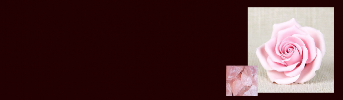
Pink is one of the most common colors of flowers; it serves to attract the insects and birds necessary for pollination and perhaps also to deter predators. The color comes from natural pigments called anthocyanins, which also provide the pink in raspberries.
In optics, the word "pink" can refer to any of the pale shades of colors between bluish red to red in hue, of medium to high lightness, and of low to moderate saturation. Although pink is generally considered a tint of red, the colors of most tints of pink are slightly bluish, and lie between red and magenta. A few variations of pink, such as salmon color, lean toward orange.
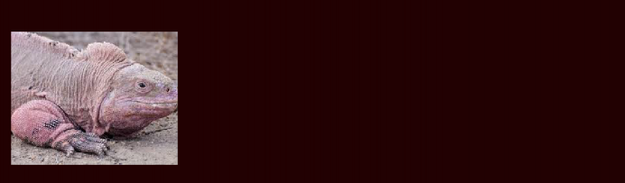
An Ocelated frogfish (Antennarius ocellatus), from East Timor. The frogfish is camouflaged to look like a rock covered with algae or seaweed; it lies motionless and waits for its prey to come to it. The pink iguana of the Galapagos Islands was first identified in 1986 and first recognized as a distinct species in 2009. The Pink Dolphin is a freshwater river dolphin which lives in the Orinoco, Amazon and Araguaia/Tocantins River systems of Brazil, Bolivia, Peru, Ecuador, Colombia and Venezuela. It is an endangered species and has a brain 40% larger than a human's. The so-called "white elephant" is revered in several countries in Southeast Asia and is naturally pinkish gray. They are actually albino elephants. Flamingoes in Laguna Colorada, Bolivia. The pink or reddish color of flamingos comes from carotenoid proteins in their diet of animal and plant plankton. An unhealthy or malnourished flamingo, or one kept in captivity and not fed sufficient carotene, is usually pale or white.
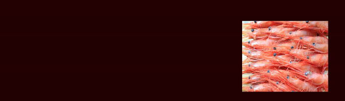
Raw beef is red, because the muscles of vertebrate animals, such as cows and pigs, contain a protein called myoglobin, which binds oxygen and iron atoms. When beef is cooked, the myoglo- bin proteins undergo oxidation, and gradually turn from red to pink to brown; that is, from rare to medium to well-done. The shells and flesh of crustaceans such as crabs, lobsters and shrimp contain a pink carotenoid pigment called astaxanthin. Their shells, naturally blue-green, turn pink or red when cooked. The flesh of the salmon also contains astaxanthins, which makes it pink. Farm-bred salmon are sometimes fed these pigments to improve their pinkness, and it is sometimes also used to enhance the color of egg yolks.
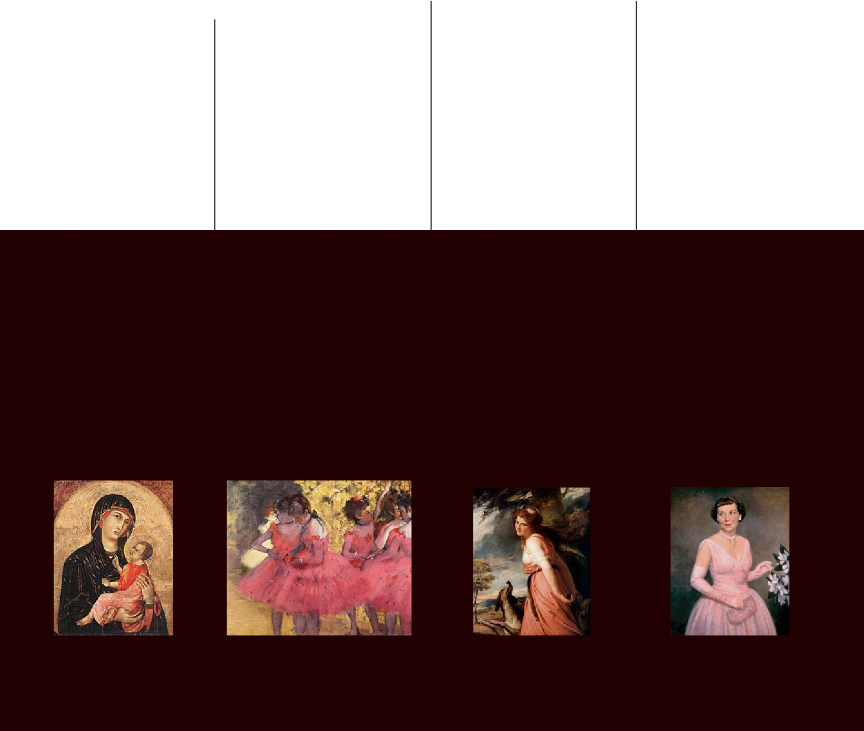
The zenith of the color pink was the 18th century, when pastel colors became very fashionable in all the courts of Europe. Pink was particularly championed by Madame de Pompadour
(1721-1764), the mistress of King Louis XV of France, who wore combinations of pale blue and pink, and had a particular tint of pink made for her by the Sevres porcelain factory, created by adding nuances of blue, black and yellow.[13]
While pink was quite evidently the color of seduction in the portraits made by George Romney of Emma, Lady Hamilton, the future mistress of Admiral Horatio Nelson, in the late 18th century, it had the completely opposite meaning in the portrait of Sarah Barrett Moulton painted by Thomas Lawrence in 1794. In this painting, it symbolized childhood, innocence and tenderness. Sarah Moulton was just eleven years old when the picture was painted, and died the following year.
Madame de Pompadour, the mistress of Louis XV of France, made pink and blue the leading fashion colors in the Court of Versailles. She had a special pink tint created for her by the Sevres porcelain factory. This portrait by Maurice Quentin de La Tour was painted between 1748 and 1755.
Pink had become a popular color throughout Europe by the late 18th century. It was associated with both romanticism and seduction. This fashion plate is from 1778-1787.
Emma, Lady Hamilton, later the mistress of Admiral Horatio Nelson, had herself painted by English painter George Romney posing as a Bacchante, dressed in pink. (1782-1784)
The portrait of Sarah Moulton, popularly known as "Pinkie", by Sir Thomas Lawrence (1794). Here pink represented youth, innocence and tenderness.
Paul-Henri Thiry, Baron d'Holbach by Louis Carmontelle. Pink was worn by both sexes.
In 19th century England, pink ribbons or decorations were often worn by young boys; boys were simply considered small men, and while men in England wore red uniforms, boys wore pink.
In fact the clothing for children in the 19th century was almost always white, since, before the invention of chemical dyes, clothing of any color would quickly fade when washed in boiling water.
Queen Victoria was painted in 1850 with her seventh child and third son, Prince Arthur, who wore white and pink. In late nineteenth-century France, Impressionist painters working in a pastel color palette sometimes depicted women wearing the color pink, such as Edgar Degas' image of ballet dancers or Mary Cassatt's images of women and children.
Queen Victoria in 1850 or 1851 with her third son and seventh child, Prince Arthur. In the 19th century, baby boys often wore white and pink. Pink was seen as a masculine color, while girls often wore white and blue.
Young boy in pink, American school of painting (about 1840). Both girls and boys wore pink in the 19th century.
Dancers in pink, between scenes. Edgar Degas
The Impressionist painter Claude Monet used pink, blue and green to capture the effects of light and shadows on a white dress in Springtime (1872).
The US presidential inauguration of Dwight D. Eisenhower in 1953 when Eisenhower's wife Mamie Eisenhower wore a pink dress as her inaugural gown is thought to have been a key turning point to the association of pink as a color associated with girls. Mamie's strong liking of pink led to the public association with pink being a color that "ladylike women wear." The 1957 American musical Funny Face also played a role in cementing the color's association with women.
In the 20th century, pinks became bolder, brighter, and more assertive, in part because of the invention of chemical dyes which did not fade.
The pioneer in the creation of the new wave of pinks was the Italian designer Elsa Schiaparelli, (1890-1973) who was aligned with the artists of the surrealist movement, including Jean Cocteau. In 1931 she created a new variety of the color, called shocking pink, made by mixing magenta with a small amount of white.
In Nazi Germany in the 1930s and 1940s, inmates of Nazi concentration camps who were accused of homosexuality were forced to wear a pink triangle. Because of this, the pink triangle has become a symbol of the modern gay rights movement.
The transition to pink as a sexually differentiating color for girls occurred gradually, through the selective process of the marketplace, in the 1930s and 40s. In the 1920s, some groups had been describing pink as a masculine color, an equivalent of the red that was considered to be for men, but lighter for boys. But stores nonetheless found that people were increasingly choosing to buy pink for girls, and blue for boys, until this became an accepted norm in the 1940s.
The color pink has been described in literature since ancient times. In the Odyssey, written in approximately 800 BCE, Homer wrote "Then, when the child of morning, rosy-fingered dawn appeared..." Roman poets also described the color. Roseus is the Latin word meaning "rosy" or "pink." Lucretius used the word to describe the dawn in his epic poem On the Nature of Things (De rerum natura).
Pink was not a common color in the fashion of the Middle Ages; nobles usually preferred brighter reds, such as crimson. However, it did appear in women's fashion, and in religious art. In the 13th and 14th century, in works by Cimabue and Duccio, the Christ child was sometimes portrayed dressed in pink, the color associated with the body of Christ.
During the Renaissance, pink was mainly used for the flesh color of faces and hands. The pigment commonly used for this was called light cinabrese; it was a mixture of the red earth pigment called sinopia, or Venetian red, and a white pigment called Bianco San Genovese, or lime white.
The Greek poet Homer wrote of "the child of morning, rose-fingered dawn" in the Odyssey. Sunrise at Serifos, Greece.
In the early Renaissance, the infant Jesus was sometimes shown dressed in pink, the color associated with the body of Christ.
In the painting Madonna of the Pinks by Raphael,
c. 1506-07, the Christ Child gives a pink flower to the Virgin Mary, symbolizing the union between the mother and child.
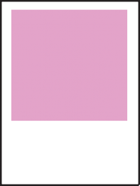
PIGGY PINK
#fdde6
The color piggy pink was formulated by Crayola in 1998. The color was originally called pig pink, but later the name was changed to "piggy pink"
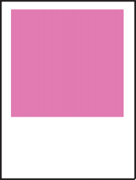
CHERRY BLOSSOM
#ffb7c5
First coined in 1867, Cherry blossom pink is an important color in Japanese culture. In the spring, the Japanese people gather to watch the cherry blossoms bloom during the Hanami festival.
BABY PINK
#fdde6
In Western culture, baby pink is used to symbolize baby girls just as baby blue is often used to symbolize baby boys.
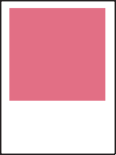
CORAL PINK
#fdde6
The complementary color of coral pink is teal. The first recorded use of coral pink as a color name in English was in 1892.
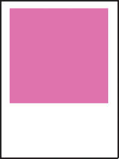
BARBIE PINK
#fdde6
Pantone 219C is the color used by Mattel's Barbie in logos, packaging, and promotional materials.
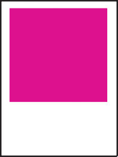
BUBBLE GUM
#fdde6
The color Bubblegum pink is displayed at right. "Bubblegum pink" is a deep tone of magenta.
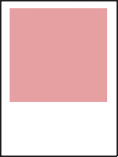
NEW YORK PINK
#fdde6
New York pink, a dark, desaturated yellow-toned shade of pink. The color name New York pink for this dark tone of pink has been in use since 2001.
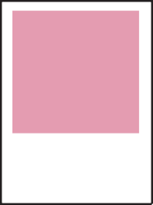
COTTON CANDY
#fdde6
A light purplish pink representing cotton candy.
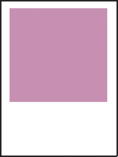
CHINA PINK
#fdde6
The color name China pink first came into use in 1948. The source of this color is the Plochere Color System, a color system formulated in 1948 that is widely used by interior designers.